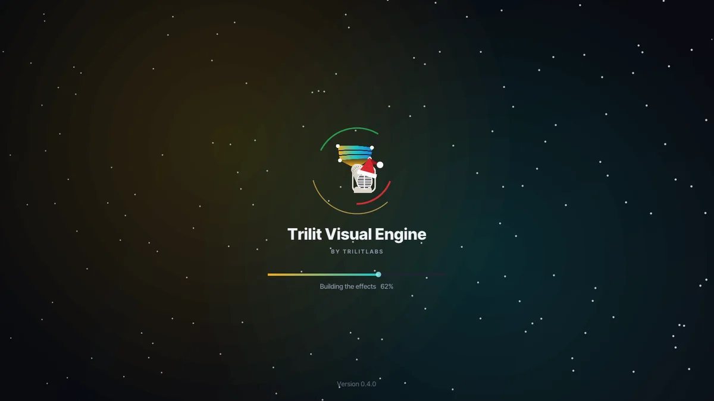
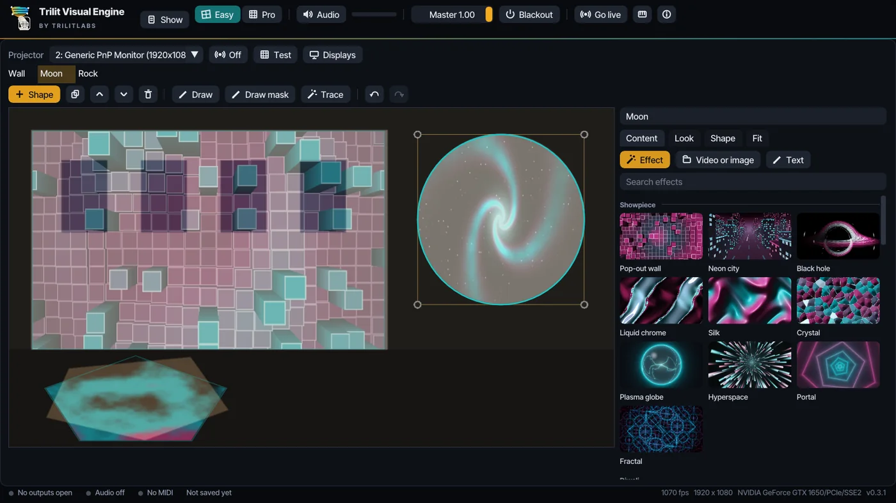
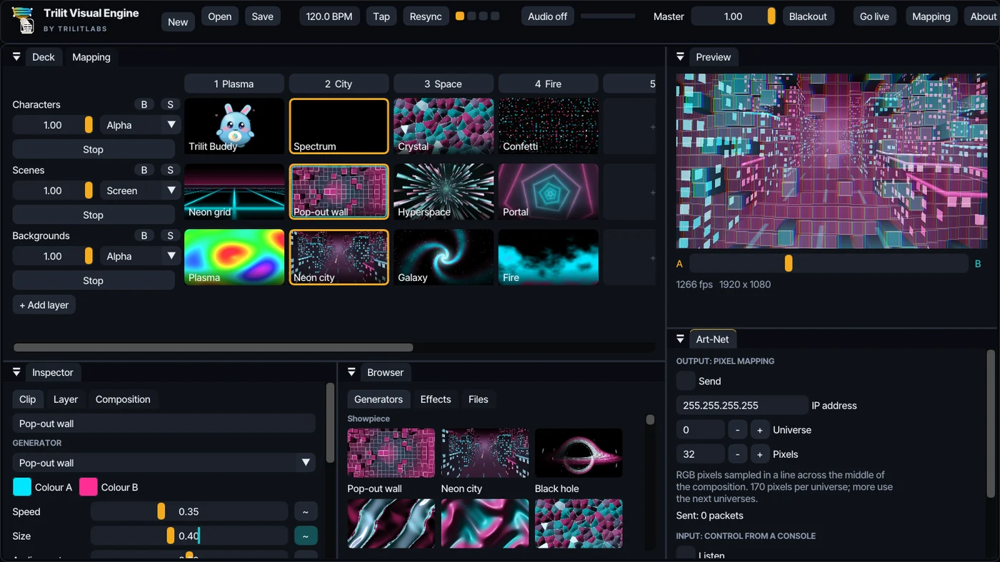
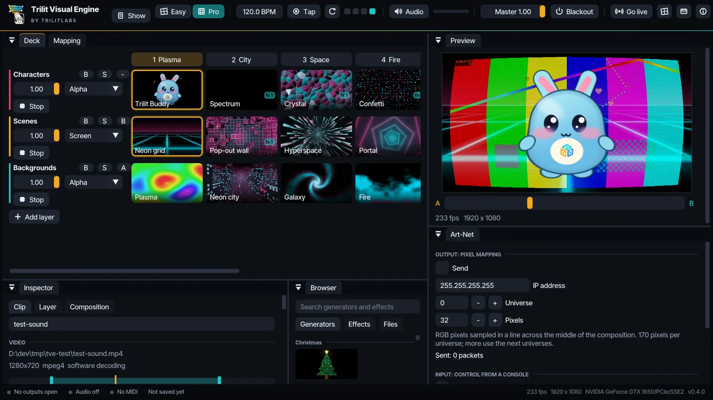
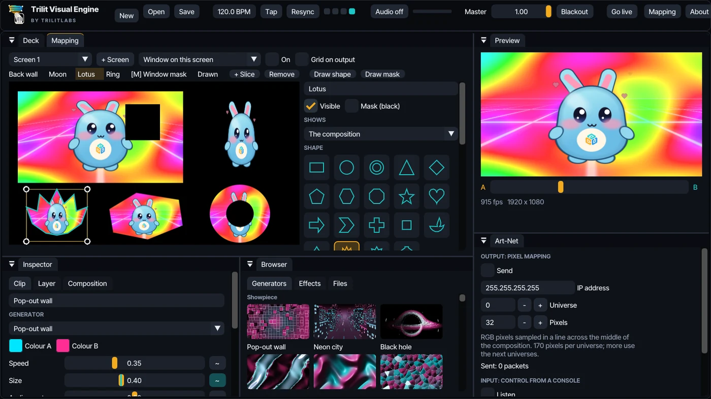
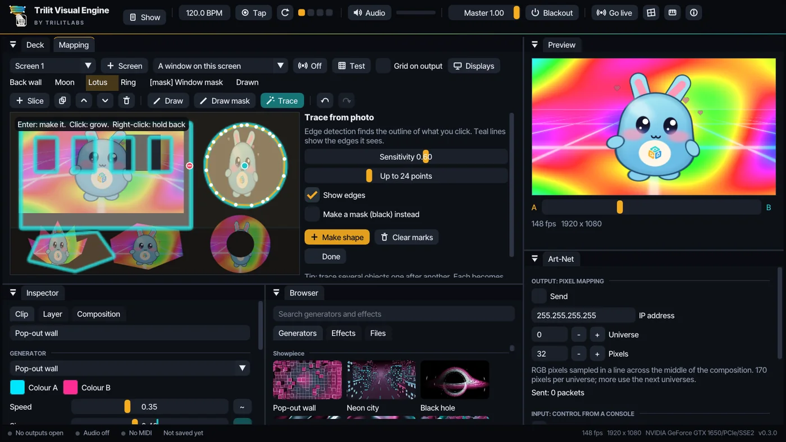
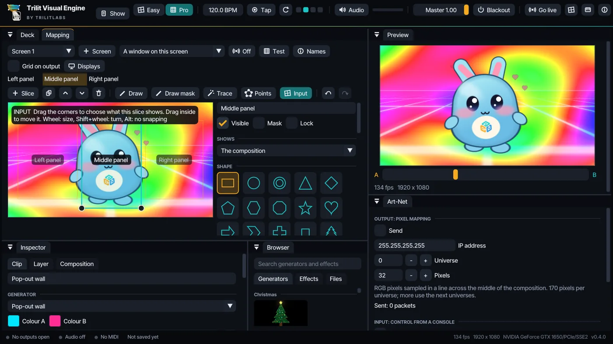
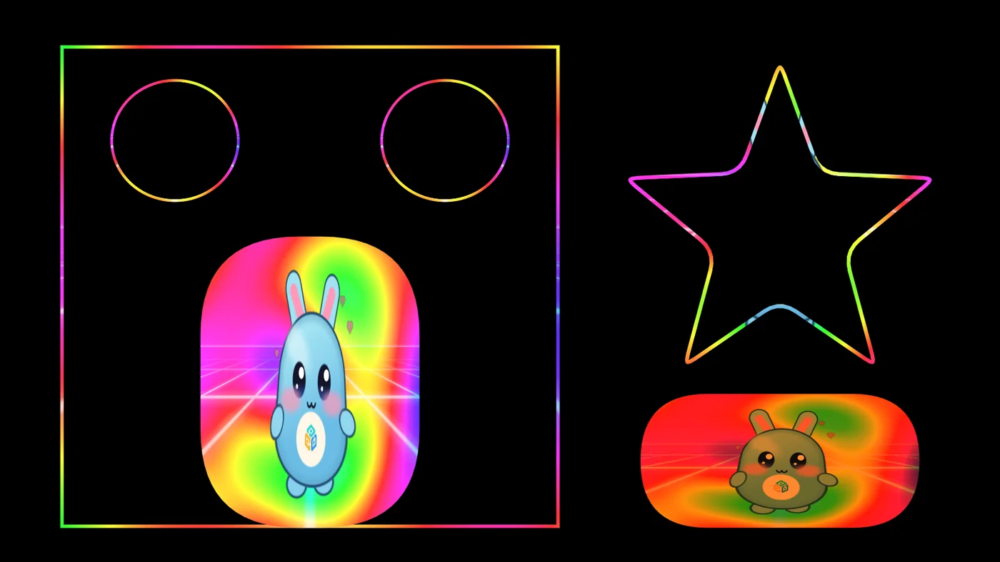
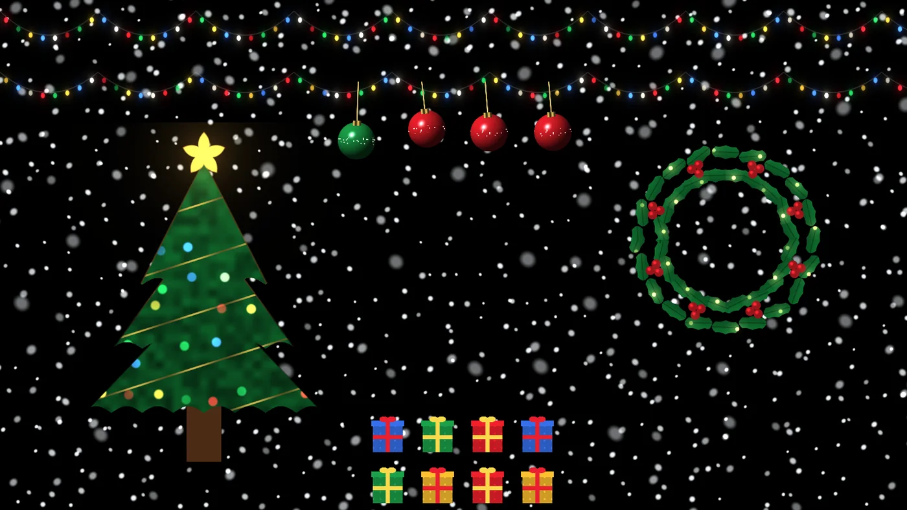
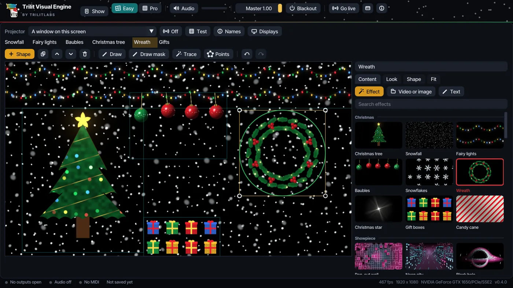

Play visuals live, then map them onto walls, stages and objects with one or many projectors. This guide walks through everything, from the first start to a full show.
Download the installer from the TrilitLabs page and run it. It installs for you only, so it doesn't need administrator rights.
Windows may say “Windows protected your PC”, because the app is not code-signed yet. Click More info, then Run anyway.
On start, a loading screen builds every visual and effect for your graphics card. This takes a few seconds the first time and means nothing stutters later in the show.
The app opens in Easy mode: your projector picture, with its shapes. The next section shows how to map your first shape in a few clicks.

The start-up screen builds everything once, so the show runs smoothly.
Runs on any PC. It needs only OpenGL 3.3, which almost every graphics card since about 2010 supports. If your PC has no working graphics driver, the app switches to software drawing by itself. It is slower, but it works.
02Easy mode: map your first shape
Easy mode works like Trilit Mapper. The big picture on the left is exactly what your projector shows. Each shape on it plays its own effect, video, picture or text, and you set it up in the four tabs on the right.

Easy mode: pick a shape on the left, then pick what it shows on the right.
Choose your projector. Next to Projector at the top, pick it from the list (it's the one not marked (main)), then click Off so it turns gold and says On. The projector now shows the picture.
Add a shape. Click + Shape and pick one: a rectangle, a circle, a star, a Christmas tree and more. It appears with its own effect already playing.
Put it on your surface. Drag its corner points on the left while you watch the wall. Drag inside it to move it, and use the mouse wheel to make it bigger or smaller. Test fills every shape with a grid, which makes lining up easier.
Choose what it shows in the Content tab: click any effect in the grid, or Video or image to pick a file, or Text to type words. You can also drag a video or picture from Explorer straight onto the shape.
Change how it looks in the Look tab: colours, speed, size, how much it moves with the music, brightness and soft edges.
More shapes: click + Shape again. A new shape is drawn over the ones before it; use the up and down buttons to change which is on top.
Content
An effect, a video or picture, or text, just for this shape.
Look
Colours, speed, size, music reaction, brightness, soft edges, a tint, contrast and colour, and extra effects.
Shape
Cut it to a circle, ring, star, heart, Christmas tree and more; round its corners or draw only its outline; hide it, lock it, or make it a black mask.
Fit
More points for curved surfaces, snapping, a photo of your stage to trace shapes on, and soft edges between two projectors.
Want the full deck? Click Pro in the top bar for layers of clips, columns, the crossfader and every setting. Easy brings you back. The rest of this guide covers both.
03Pro mode at a glance
Click Pro in the top bar to play visuals like a VJ: a deck of clips in layers, mixed live, then mapped onto your shapes.

The deck, the preview, the inspector and the browser.
Top bar
Show menu, Easy / Pro, tempo, audio, master level, Blackout, Go live, Mapping and MIDI.
Deck
Your clips, in layers (rows) and columns. Click a clip to play it.
Preview
What the show looks like right now, with the A/B crossfader under it.
Inspector
Settings for the selected Clip, its Layer, or the whole Composition.
Browser
Every generator and effect, with a search box. Drag them onto clips and layers.
Mapping
A tab next to the deck: screens, projectors, shapes, masks and warping.
The line at the very bottom shows whether outputs are live, whether audio and MIDI are on, and when the show was last saved. Panels can be dragged to new places, and they come back where you left them.
04Play clips
The deck works like an instrument. Each layer is a row and plays one clip at a time. Layers stack: the top row is drawn over the ones below.
Click a clip to play it. Click it again to restart it.
Click a column number at the top (or press 1 to 9) to fire that column on every layer at once. Right-click it to give it a name.
Stop stops a layer. B hides it (bypass). S shows only that layer (solo).
The slider under a layer's name is its opacity. The list beside it is the blend mode: Add, Screen, Multiply, Luma key and more.
The small - / A / B button puts the layer on side A or B of the crossfader in the preview.
In the Layer tab, Transition sets how many seconds one clip takes to fade into the next.
Drag a clip onto another slot to swap them. Right-click a slot to pick a generator, add text, load a video or image, copy, paste or clear.
+ Add layer adds a row; the + after the last column adds a column.
05Generators, video, images and text
Generators
67 live visuals that draw themselves: plasma, fire, a neon city, a black hole, fireworks, snowfall and a Christmas tree, and Trilit Buddy, a small creature that dances to your music. In the browser, click one to play it in the selected slot, or drag it onto any slot. Each has two colours, a speed, a size and how much it reacts to audio. Tick Lock speed to BPM to keep it in time.
Video and images
Drag files from Explorer straight onto a slot, or right-click a slot and choose Video or image.... MP4, MOV, MKV, AVI, WebM and more play with their sound; most videos decode on the graphics card. Select a video clip and the inspector shows:

The timeline: drag to jump, drag the teal ends to choose the part that plays.
Timeline: click or drag to jump. Drag the two teal ends to play only part of the video.
Play speed, from stopped to four times as fast.
At the end: loop, play once and hold the last frame, or play once and then stop the layer.
Fit to the beat: speeds the video up or down so it lasts exactly 1 beat, 1 bar, 4 bars and so on at your tempo.
Jump with the beat: jumps to a random spot every beat or bar, for a cut-up look.
Sound: mute it, or set its volume. Sound plays at normal speed. The volume of all video sound together is under Audio in the top bar.
Picture: fill the frame, fit it all in, or stretch it; flip it, turn it a quarter at a time, and crop each edge. Images have the same options.
Text
Right-click a slot and choose Text. Type your words (several lines are fine), choose the weight, and pick a colour. Tick Letters show a live effect to fill the letters with any generator.
06Effects and animation
55 effects in six groups: Colour (hue, levels, duotone, gradient maps), Blur (glow, zoom and motion blur, tilt shift), Distort (kaleidoscope, transform, bulge, swirl, ripple, polar, liquid, scroll), Stylize (RGB split, halftone, scanlines, VHS, LED wall, cartoon, film grain), Time (trails, feedback, echo, stutter, strobe, beat flash) and Mask (chroma key, luma key, wipes and soft edges).
Put effects on a clip, on a layer (everything that layer plays) or on the composition (the whole show). Use + Add effect in the inspector, or drag one from the browser onto a slot, a layer name or a chain.
Effects run top to bottom. Each has an on/off box, Mix (how much of it you see), and buttons to move it up, duplicate it or remove it.
Chroma key removes a green or blue screen; Luma key makes black see-through, so layers below show.
Make any setting move
Every slider has a ~ button. Choose Sine, Saw, Square or Random to move it in time with the BPM, or Audio level, Bass or Beat to move it with the music. Depth is how far it moves, Cycle how long one sweep takes. A teal mark on the slider shows where the value is right now.
07Music and tempo
Click Audio and pick a microphone or line input, or System sound (what the PC plays) to listen to whatever your PC is playing. The meter beside it shows the level and flashes on beats. Gain makes quiet sound count for more.
Set the tempo by dragging the BPM box, or tap Tap (or T) in time with the music a few times.
The round arrow (Resync) makes this moment the start of a bar. The four dots show the beats of the bar.
Blackout (or B) takes everything dark at once and silences video sound. Master fades the whole show.
08Mapping a stage
Open the Mapping tab. A screen is one output: one projector or display. On each screen you place slices. A slice takes the show (or one layer on its own) and lands it on a surface: a wall, a box, a sign, a car.

Slices cut to shapes, a mask over a window, and the settings for the selected slice.
Point your projector at the stage. Choose the projector in the display list at the top of the Mapping tab, then switch the screen On. Press Esc on the projector's picture to close it again.
Add a slice with + Slice, then drag its corner points until it covers the surface exactly, watching the projector. Tick Grid on output to see the grid on the surface itself, or switch on Test to fill every slice with a test grid while you line things up.
For a curved or uneven surface, raise Columns and Rows under Warp (up to 16 × 16) and drag the extra points onto the bumps. Soft bend pulls nearby points along; Smooth evens out the curve.
Under Shape, cut the slice to a circle, ring, star, heart, Christmas tree, snowman and more, or choose Custom and drag its points.
Under Shows, choose The composition, or a single layer so that this surface plays its own content. Turn off Show in the composition in that layer's tab if it should appear only on its slice.
Tick Mask to make a slice black, to hide windows, doors and light spilling past the edges.
Input chooses which part of the picture the slice shows, by four corners; see Input view and lines. Match output takes the part behind the slice, so several slices make one big picture.
Lock stops a finished slice from being moved by accident. Duplicate a slice with the copy button (Ctrl+D), and change which slices are drawn on top with the up and down buttons.
Undo and Redo (Ctrl+Z, Ctrl+Y) step back and forward through mapping changes.
09Shapes from a photo
The fastest way to map real objects: take a photo of the stage from where the projector stands, and let the app find the outlines.
Under Reference photo, click Load... for a photo from your phone, or Take... to use a webcam. You can also drop a photo onto the canvas. The photo shows only in the editor, never on the projector.
Click Trace. The teal lines show the edges the app sees in the photo.
Click on the object you want. Its outline appears in gold. If it spills onto the background, right-click the background to hold it back; if it stops short, click more of the object.
Adjust Sensitivity (higher stops at fainter edges) and Up to ... points (fewer gives simpler, smoother shapes).
Press Enter or Make shape. The slice appears exactly in place. Trace the next object, or tick Make a mask to black something out.

One click on the round surface; the outline follows its edge.
Prefer to draw by hand? Click Draw (or Draw mask) and click around the object. Each point snaps to the nearest edge in the photo; hold Alt to place it freely. Click the first point or press Enter to finish, Backspace to undo a point.
10Moving points, slices and many points at once
To
Do this
Move a point
Drag it. Hold Ctrl for slow, precise moves. Arrow keys move it one pixel; with Shift, ten.
Move a whole slice
Drag inside it. Clicking inside another slice selects that one.
Resize or turn a slice
Mouse wheel over it resizes it around the pointer; Shift+wheel turns it.
Pick several points
Shift-click them, or Shift-drag a box around them. Ctrl+A picks them all.
Resize several points together
Drag the white handles of the box around them: a corner resizes both ways, a side one way. Shift keeps the proportions; Alt resizes from the middle.
Turn several points together
Drag the round knob above the box. Shift turns in steps of 15°.
Edit a shape's own points
Click Points. It works on every shape, circles too: a circle becomes a ring of 24 points. Drag points; click a small dot on an edge to add a point; right-click a point to remove it; pick several and press Delete. The same box handles work here, and Soft drag pulls the neighbours along for smooth curves.
Make two slices meet exactly
Drag a corner near another slice's point or the screen edge: it snaps onto it, and a pink ring shows where. Hold Alt to place it freely. Snapping can be turned off under Warp.
11Input view, rounded corners and lines
Choose what each slice shows
In Pro mode, click Input in the Mapping tab. The canvas now shows the picture itself, and every slice's part of it as four corners.

The Input view: three panels share one picture; the middle panel's part is selected.
Drag a corner to stretch, skew or tilt the part a slice shows. Drag inside to move it. The mouse wheel makes it bigger or smaller; Shift+wheel turns it. Corners snap to the picture's edges and to other slices' corners; hold Alt to place them freely.
The gold edge marks the top of what the slice shows, so you can see when it is flipped or turned.
Under Input beside the canvas: All of it shows the whole picture, Match output takes the part behind the slice, and Flip left-right, Flip up-down and Turn mirror or rotate it.
Click Input again to go back to placing slices on the projector.
Rounded corners, outlines and colour

Outline only, rounded corners and colour for each shape.
Round corners softens the corners of rectangles and of any shape with points. Full rounding turns a rectangle into a pill.
Outline only draws just a line of light along the edge, as wide as you like. Trace the edges of a building, a window frame or a stage set with it.
Tint, Contrast and Colour change one shape on its own, to match two projectors or warm up a cold wall. Reset colour puts them back.
A mask with Keep only its inside ticked turns around: everything outside it goes black, so the picture stays inside one outline.
Names on the projector, and the mapping on its own
Names next to Test shows each shape's name on the projector, to tell them apart while you map. In the Show menu, Save the mapping only keeps a venue's screens, slices, masks and photos in a .tvemap file; Load a mapping brings them into any show without touching its clips.
12Several projectors and displays
Connect every projector to the PC and set Windows to Extend the display (press Win+P). Then click Displays in the Mapping tab:
A map shows your displays as Windows arranges them, which one holds this editor, and which screen uses each one.
Add an output here puts a new screen on a display. An output on every free projector does all of them at once.
Identify shows each screen's name, big, on its own projector for three seconds, so you know which is which.
Go live in the top bar opens every screen at once; the button then shows how many are live.
Two projectors on one wide surface
Overlap the two pictures a little. In each screen, open Projector overlap (edge blend) and fade the side that overlaps (Right on the left projector, Left on the right one) until the overlap is no brighter than the rest. Curve fine-tunes how the fade looks on your projectors.
13MIDI keyboards and controllers
Plug in a MIDI keyboard, pad controller or fader box. Click MIDI in the top bar and tick your device.
Link anything to a key or knob
Click Learn. Everything you can link gets a teal outline: clips, columns, Stop, bypass and solo, Tap, Blackout, Master, the crossfader, every slider in the inspector, and every shape in the Mapping tab.
Click the thing you want to control, then press a key or move a knob. Its outline now shows the key or knob it follows.
Press Esc (or click Learn again) when you're done.
Play the building like an instrument
In the MIDI window, Keys play the shapes on this screen gives every shape its own key, starting at C3. Choose how the keys behave first:
Only while held: a shape lights while its key is down, brighter the harder you play.
Flash and fade: a shape flashes and fades out after each note.
Toggle on and off: each press switches the shape on or off.
Keys fire the columns puts the columns on the keys from C2. Every link is listed in the MIDI window, where you can change a key's mode or remove the link. Links are saved with the show.
14Art-Net and lighting consoles
Out: pixels to your lights
Tick Send and set the IP address, universe and number of pixels. The app samples a line of RGB pixels across the middle of the show, 170 per universe, so LED strips and fixtures follow the visuals.
In: control from a console
Tick Listen and choose a universe and first channel. Two channel layouts:
Layout
Channels
Trilit Visual Engine (11)
1 master, 2 crossfader, 3 to 10 opacity of layers 1 to 8, 11 column number to fire
Trilit Mapper (8)
1 dimmer, 2 to 4 colour (red, green, blue), 5 effect (10 and up), 6 speed (128 is normal), 7 strobe, 8 audio react
The Trilit Mapper layout means a console already set up for Trilit Mapper works unchanged.
15Christmas
Everything for a Christmas show is built in.

The Christmas scene, as it appears on the projector.
The Christmas scene: in the Show menu, choose Christmas scene for snowfall, fairy lights, a tree, baubles, a wreath and gifts, each on its own shape and ready to drag onto your surfaces. Add the Christmas scene to this show puts the same shapes on top of the show you have open; in Easy mode it is also at the top of the + Shape menu.
Nine Christmas effects: Snowfall, Fairy lights, Christmas tree, Baubles, Candy cane, Gift boxes, Snowflakes, Wreath and Christmas star, first in the effects list. Turn on audio and the lights dance to the music.
The Christmas look: snow in the top bar, holly red and pine green, and a Santa hat on the logo. It comes on by itself from 10 November to 6 January; switch it with Christmas look in the Show menu.

The Christmas look in Easy mode, with the Christmas scene ready to map.
16Saving shows, templates and Trilit Mapper shows
The Show menu has New show, Open, Save and Save as. Shows are .tve.json files with everything in them: clips, effects, screens, slices, MIDI links and Art-Net settings. Video and image files stay where they are, so keep them with the show.
The app also saves by itself every minute and when you close it, and opens where you left off.
Start from in the Show menu loads the Welcome demo or the Christmas scene, each ready to fit to your stage.
Save the mapping only and Load a mapping move a venue's screens and slices between shows; see section 11.
Coming from Trilit Mapper? Choose Import a Trilit Mapper show, or simply open or drop the Mapper's .json file. Each surface becomes its own layer and slice, in the same place, with the same effect, colours, shape and warp. Masks stay masks. Save it to keep it as a Visual Engine show.
17Keyboard shortcuts
Keys
What they do
1 … 9
Fire a column
T
Tap tempo
B
Blackout on or off
Delete
Clear the selected slot (or remove picked shape points)
Ctrl+S
Save (with Shift: save as)
Ctrl+O
Open a show
Ctrl+Z / Ctrl+Y
Undo and redo mapping changes
Ctrl+D
Duplicate the selected slice
Ctrl+A
Pick every point of the selected slice
Enter
Finish a drawn shape, or make a traced one
Alt while dragging
Place a point freely, without snapping
Esc
On a projector: close that output. In the editor: cancel drawing or tracing, clear picked points, end MIDI learn
18If something goes wrong
The projector isn't in the list
Press Win+P and choose Extend. Then open Displays again. Until a second display is connected, outputs open as normal windows.
The picture is on the wrong projector
Click Identify in Displays, then choose the right display for each screen.
A video has no sound
Sound plays only at normal speed (1.00), so it stops while Fit to the beat or Play speed changes the speed. Check the clip isn't muted, that Video sound under Audio is turned up, and that Blackout is off.
A video won't open
Most formats work. If one doesn't, convert it to MP4 (H.264) with any video converter.
It feels slow
In the Composition tab, choose a lower resolution such as 1280 × 720, use fewer heavy effects (blurs and glows cost most), and install the latest graphics driver.